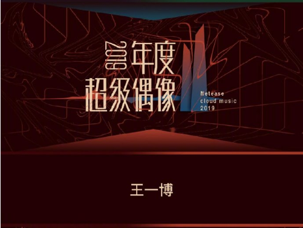
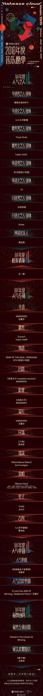
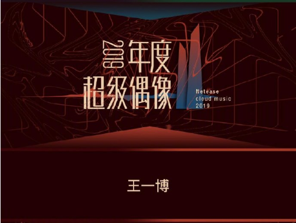
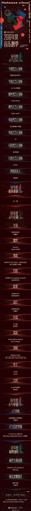

[王一博][新闻]191223 网易云音乐2019年度音乐榜单出炉 王一博拿下2019“年度超级偶像称号”
2019-12-23 15:57:18 来源：微博 2828次阅读
网易云音乐2019年度音乐榜单人气类投票通过15天的角逐，评选出了25个人气奖项，王一博以断层800多万的票数拿下来了2019“年度超级偶像”的荣誉称号！不愧是你，不愧是猫头！
努力付出过后就是收获果实的时候啦，每个奖项的最高得票者都将作为网易云音乐2019年度音乐榜单的人气奖进行展出，敬请期待~
 
2019-12-23 15:57:18 来源：微博 2828次阅读
网易云音乐2019年度音乐榜单人气类投票通过15天的角逐，评选出了25个人气奖项，王一博以断层800多万的票数拿下来了2019“年度超级偶像”的荣誉称号！不愧是你，不愧是猫头！
努力付出过后就是收获果实的时候啦，每个奖项的最高得票者都将作为网易云音乐2019年度音乐榜单的人气奖进行展出，敬请期待~
 
酷盖的守护星9801
欧耶 恭喜恭喜
执着的阿令
恭喜酷盖小王子
水果梨
恭喜一博